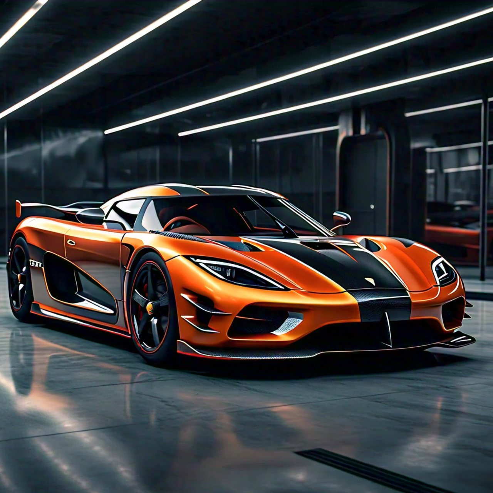
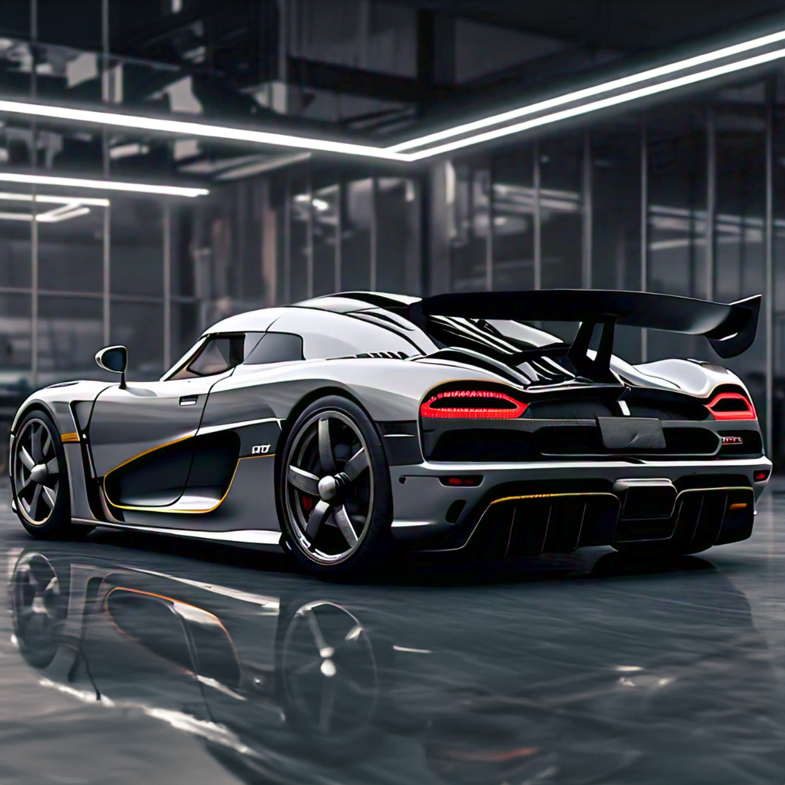

gt series
OVERVIEW:
The GT Series is the first ever Gran Touring production car created by Epsilon. This piece of history is no longer used in GT racing, but represents Epsilon in other racing events. The GT Series has innovated the racing industry with its Formula 1 inspired downforce system. The sleek design allows for minimal drag and the ability to take corners with speed. All GT Series cars produced have been modified to support comfort. Replacing the hard, light racing seats with comfortable bucket seats suitable for casual use. The reworked visually appealing dashboard replaces the bland, lightweight racing one.
SPECIFICATIONS:
| Horse power | 720 hp |
|---|---|
| Torque | 740 Nm |
| Engine | v10 - GTE10 |
| Induction | twin turbo |
| Weight | 1610kg |
| Top speed | 420 km/h |
| Red Line | 9000+ RPM |
| efficiency | 14L/100km |
COLOURS:
Purchase - $525,120